Intelligent Agents
This page presents my learning journey and evidence from the Intelligent Agents module. It brings together collaborative discussions, practical activities, team design work, my individual Inquiro implementation, feedback, professional development and reflection.
Live e-Portfolio: https://vinodjadhav-ai.github.io/
Contents
- Module Overview
- Learning Outcomes
- Learning Journey
- Collaborative Discussion 1
- Collaborative Discussion 2
- Unit 6: KQML and KIF Dialogue
- Team C Design Proposal
- Unit 8: Parse Tree
- Collaborative Discussion 3
- Unit 10: Deep Learning in Action
- Individual Project: Inquiro
- Reflective Case Studies
- Professional Development
- Final Reflection
- Learning Outcome Mapping
- References
1. Module Overview
The Intelligent Agents module introduced the principles, architectures and practical use of autonomous software agents. Across the module I studied agent models, communication languages, natural language processing, deep learning, ethical issues and collaborative development.
My learning progressed from discussing the benefits and risks of intelligent agents to designing and implementing a working multi-agent system. Practical activities on KQML/KIF, constituency parsing and deep learning helped me connect theory with examples, while the Team C proposal and my individual Inquiro project developed my understanding of architecture, shared state, testing, remediation and responsible AI practice.
This e-Portfolio presents selected evidence and reflection rather than reproducing complete assignment submissions. The main focus is how my understanding changed and how I applied the module concepts in practice.
2. Module Learning Outcomes
- Identify and critically analyse agent-based systems, differentiating between architectures and approaches.
- Apply and critically evaluate intelligent-agent techniques to real-world problems involving uncertainty and technical risk.
- Use appropriate software tools to design and implement an agent-based system while considering legal, social, ethical and professional issues.
- Develop the skills required to contribute effectively within a virtual development team.
These outcomes were addressed through the three collaborative discussions, the KQML/KIF and NLP activities, the Team C design proposal, the deep-learning activity and the Inquiro implementation. The project required me to compare design options, work with a team, build and test software, document failures and improvements, and reflect on reliability, explainability and responsible deployment.
3. My Learning Journey
At the start of the module I mainly viewed intelligent agents as advanced automation tools. The early discussions introduced autonomy, cooperation, bounded behaviour and human oversight, which helped me understand that agents can be useful but may also introduce uncertainty and risk.
The middle units developed my understanding of communication and language. KQML and KIF showed how agents can express intentions and share knowledge, while constituency parsing demonstrated why natural-language interpretation can be difficult when one sentence has more than one valid structure.
The Team C proposal then gave me experience of collaborative architecture design. Finally, the Inquiro project brought the learning together through Python, LangGraph, Ollama, arXiv retrieval, shared state, testing and remediation. The most important change in my thinking was recognising that successful AI development depends not only on a working model, but also on clear boundaries, observable behaviour, relevant evidence, testing and responsible human judgement.
4. Units 1–3: Collaborative Discussion 1
At the beginning of the module, I mainly understood intelligent agents as systems that could automate tasks, process data and support faster decision-making. In my initial post, I connected these ideas with examples from networking, cybersecurity and customer service.
The peer discussion helped me look beyond the benefits. Feedback introduced ideas such as bounded autonomy, emergent behaviour, governance and human oversight. While responding to other students, I also considered the BDI model, the role of Large Language Models and the need for validation when agents operate in complex environments.
This activity changed my view of agents from simple automation tools to systems that can act, adapt and cooperate, but may also behave unpredictably. It was one of the first activities where I began moving from describing ideas towards evaluating risks and limitations.
Learning outcomes addressed: LO1 and LO4.
Evidence
Initial Post
My submitted discussion on the growth, benefits and ethical considerations of agent-based systems.
View initial postFeedback Received
Peer feedback introducing bounded autonomy, governance, oversight and unpredictability.
View feedback receivedMy Peer Responses
My responses discussing emergent behaviour, BDI, LLM reliability and human oversight.
View my peer responsesSummary Post
My final summary showing how my understanding developed across Units 1–3.
View summary postDiscussion Screenshots


5. Units 4–7: Collaborative Discussion 2
In this discussion, I compared Agent Communication Languages such as KQML with direct method invocation in Python and Java. I initially understood software communication mainly as function calls or API requests. Studying KQML helped me understand that autonomous agents also need to communicate intentions, such as asking, informing, negotiating and refusing.
Feedback from my classmates expanded my understanding of shared ontologies and semantic interoperability. Even when agents use the same protocol, misunderstandings can still occur if they interpret concepts differently. The discussion also introduced approaches such as ontology alignment and more formal standards including FIPA-ACL.
While responding to peers, I considered speech act theory, security risks and prompt injection. This helped me recognise that richer communication provides greater flexibility, but also creates more complexity and risk. My final conclusion was that method invocation suits predictable and tightly coupled applications, whereas ACLs are more suitable when independent agents need to cooperate or negotiate.
Learning outcomes addressed: LO1, LO2 and LO4.
Evidence
Initial Post
My comparison of KQML with method invocation, including performatives, interoperability and ontologies.
View initial postFeedback Received
Peer feedback on ontology alignment, FIPA-ACL, semantic dependency and scaling communication.
View feedback receivedMy Peer Responses
My responses on speech acts, negotiation, security, prompt injection and modern agent frameworks.
View my peer responsesSummary Post
My final reflection on ACLs, method invocation, shared ontologies and the continuing relevance of KQML.
View summary postDiscussion Screenshots


6. Unit 6: KQML and KIF Agent Dialogue
In this activity, I created a short dialogue between Alice, a procurement agent, and Bob, a warehouse stock-control agent. Alice asked Bob about the available quantity of 50-inch televisions and the number of HDMI ports provided by the product.
I used KQML performatives such as ask-one, tell and
reply to represent the intention of each message. KIF-style expressions were
used to represent the stock and product information contained within the messages.
This activity helped me understand that successful agent communication depends on more than sending data. Agents must also share a common ontology so that terms such as available stock and HDMI port count have the same meaning to both parties.
I completed this activity while finalising my e-Portfolio in accordance with the Unit 6 guidance. It was not a separately submitted assessment.
This activity provided a practical introduction to agent communication and reinforced concepts that were later useful when studying multi-agent workflows.
Learning outcomes addressed: LO1 and LO2.
Supporting Evidence
The completed dialogue and reflection below demonstrate my understanding of KQML performatives, KIF-style knowledge representation and shared ontologies.
Completed Dialogue
KQML and KIF messages showing the exchange between Alice and Bob.
View completed dialogueActivity Reflection
My reflection on performatives, message content, shared ontologies and future improvements.
View reflectionActivity Screenshots
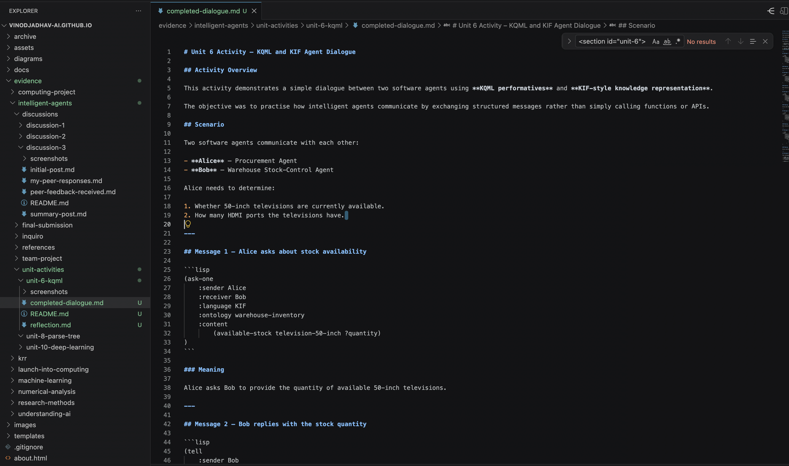
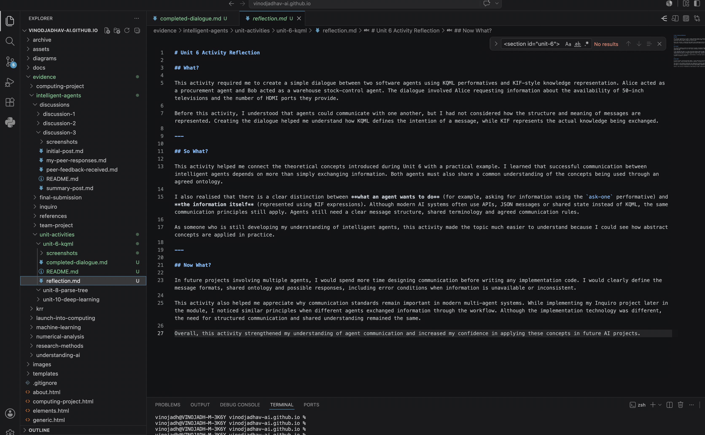
7. Team Project – Inquiro Design Journey
Project Overview
The Team Project focused on designing Inquiro, a multi-agent academic research assistant intended to support literature discovery, information processing and report generation. Rather than asking one language model to complete every task, the team proposed four specialised agents working through one coordinated workflow.
The Planner Agent would divide a research question into smaller tasks. The Retriever Agent would search academic sources, the Processor Agent would summarise and rank the findings, and the Writer Agent would generate a structured report. LangGraph was selected to coordinate the workflow and maintain information through a shared state object.
The Problem We Were Solving
Academic research normally involves repeated activities such as searching for papers, filtering results, reading abstracts, comparing findings and preparing a report. These stages can take considerable time, particularly when the topic is broad or unfamiliar.
Our team therefore explored whether specialised agents could divide this process into smaller, manageable tasks. The objective was not to replace the researcher, but to create a prototype that could assist with information gathering and provide an organised starting point for further review.
Team Planning and Discussion
During the team meeting, we discussed the project scope, architecture, technology stack, dependencies, responsibilities and GitHub workflow. An early design included a top-level interface and separate Planner, Retriever, Processor and Writer agents.
Shared state memory remained an open question. The team agreed that members should research possible approaches before the architecture was finalised. Responsibilities were also identified for preparing the technical solution, project outline, workflow diagrams and task allocation.
This meeting showed me that technical uncertainty is a normal part of software design. Rather than selecting a solution without enough information, the team recorded the open issue and agreed on further research.
Design Options Considered
The design journey included discussion of a single-agent approach compared with multiple specialised agents, cloud models compared with local models, and a web interface compared with a simpler command-line interface.
The multi-agent approach was selected because it separated the workflow into clearer responsibilities and made each stage easier to understand, test and improve. The proposal also allowed for both cloud and local language models so the prototype could remain practical within cost and hardware constraints.
Why the Architecture Was Chosen
LangGraph was chosen because it provides explicit workflow control and shared state management. The four-agent structure made the design modular: planning, retrieval, processing and report generation could be examined separately while still contributing to one complete workflow.
The arXiv API was selected because it provides academic research material without requiring a paid subscription. Local storage was proposed for generated reports, while deterministic templates were considered for producing consistent outputs.
My Individual Contribution
I participated in the team discussions, reviewed the proposed architecture and raised questions about agent responsibilities, shared state, implementation complexity and the use of local language models. I also contributed to reviewing technical ideas, diagrams and sections of the project documentation.
Reflecting on the team activity helped me recognise strengths in communication, cooperation, technical review and documenting meeting outcomes. It also highlighted areas I want to improve, particularly making technical decisions more confidently and balancing detailed analysis with project timelines.
From Team Design to My Individual Implementation
The Team C proposal later became the starting point for my individual Inquiro implementation. I retained the main four-agent structure and LangGraph workflow, but simplified some technology choices to make the system practical to build and test locally.
My final implementation used one local Ollama model shared across the Planner, Processor and Writer roles, with different prompts defining each responsibility. I also used a command-line interface rather than the optional Streamlit interface so I could concentrate on the agent workflow, testing, logging and evidence generation.
Reflection on Teamwork and Design Decisions
What?
The team worked together to design a multi-agent academic research system. We discussed the problem, agent roles, tools, shared state, responsibilities and expected workflow before preparing the final design.
So What?
I learned that early planning and clear communication reduce confusion later in a project. Team members brought different strengths, including architecture design, report preparation, technical review and documentation. Constructive discussion improved the design because assumptions and implementation choices had to be explained rather than simply accepted.
Now What?
In a future team project, I would establish responsibilities, shared documentation and decision records earlier. I would also encourage the team to build a small prototype sooner so that architecture assumptions could be tested before detailed documentation was completed.
Learning Outcomes
This activity contributed to several of the module learning outcomes. Working collaboratively to design the Inquiro system strengthened my understanding of agent-based computing and multi-agent architectures (LO1 and LO2). Evaluating alternative technologies, discussing architectural trade-offs and planning the workflow helped develop my ability to apply intelligent agent techniques to a real-world problem (LO3). The project also reinforced the importance of teamwork, communication and collaborative software development within an AI project (LO4).
Supporting Evidence
The evidence below supports the design journey, my participation and the reflection presented in this section.
Meeting Summary
Architecture, technology stack, responsibilities, action plan and the shared-state question.
View meeting summaryTeamwork Reflection
An anonymised reflection on communication, collaboration, my contribution and future development.
View teamwork reflectionTeam Project Reflection
My technical reflection on the design decisions and their influence on the implementation.
View team project reflectionIndividual Implementation
The implemented Inquiro workflow, testing, outputs and critical evaluation.
Go to the Inquiro project sectionSelected Screenshots
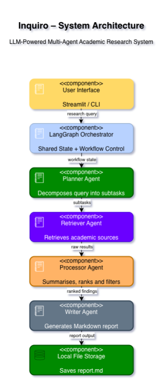
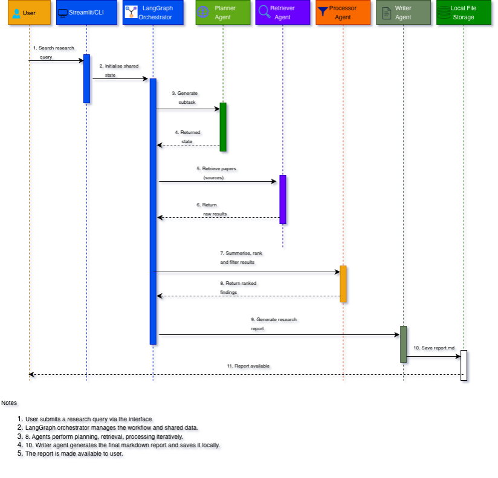
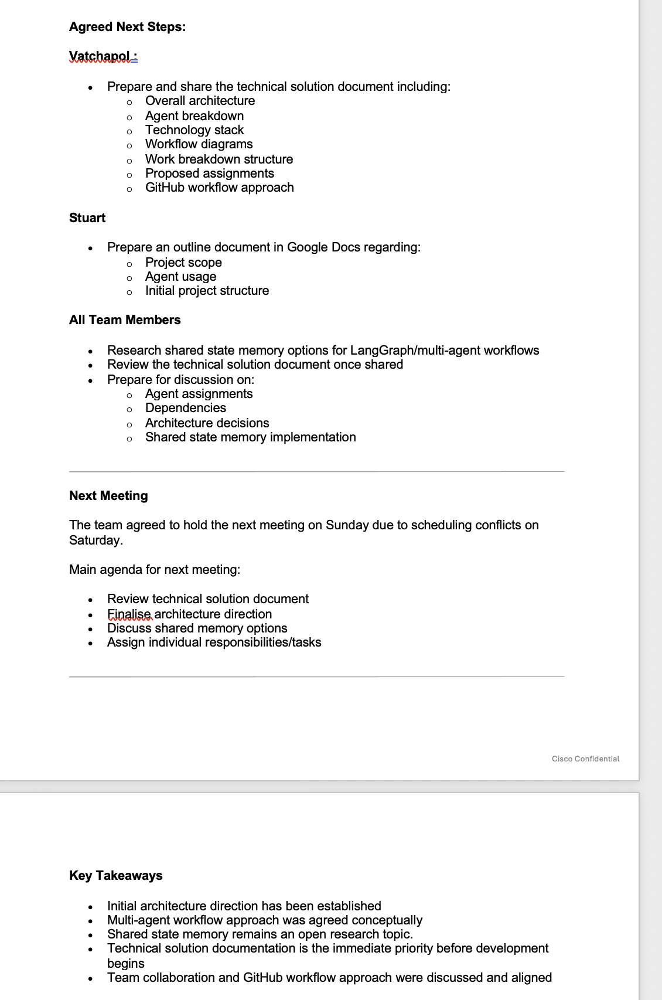
8. Unit 8: Constituency-Based Parse Trees
This activity focused on constituency-based parsing, an important concept in Natural Language Processing (NLP). I created parse trees for three English sentences to identify grammatical structures such as noun phrases (NP), verb phrases (VP) and prepositional phrases (PP).
The activity demonstrated how NLP systems represent sentence structure and highlighted that some sentences can have more than one valid interpretation. The final example, involving a telescope, showed how structural ambiguity can produce different meanings depending on where a prepositional phrase is attached.
Completing this exercise helped me understand that syntactic analysis is an important stage of language understanding and supports applications such as information extraction, question answering, machine translation and intelligent agents.
Supporting Evidence
Completed Activity
Constituency-based parse trees for the three required sentences together with an explanation of the grammatical structure.
View completed activityReflection
My reflection describing what I learned about constituency parsing, ambiguity and Natural Language Processing.
View reflectionActivity Screenshots
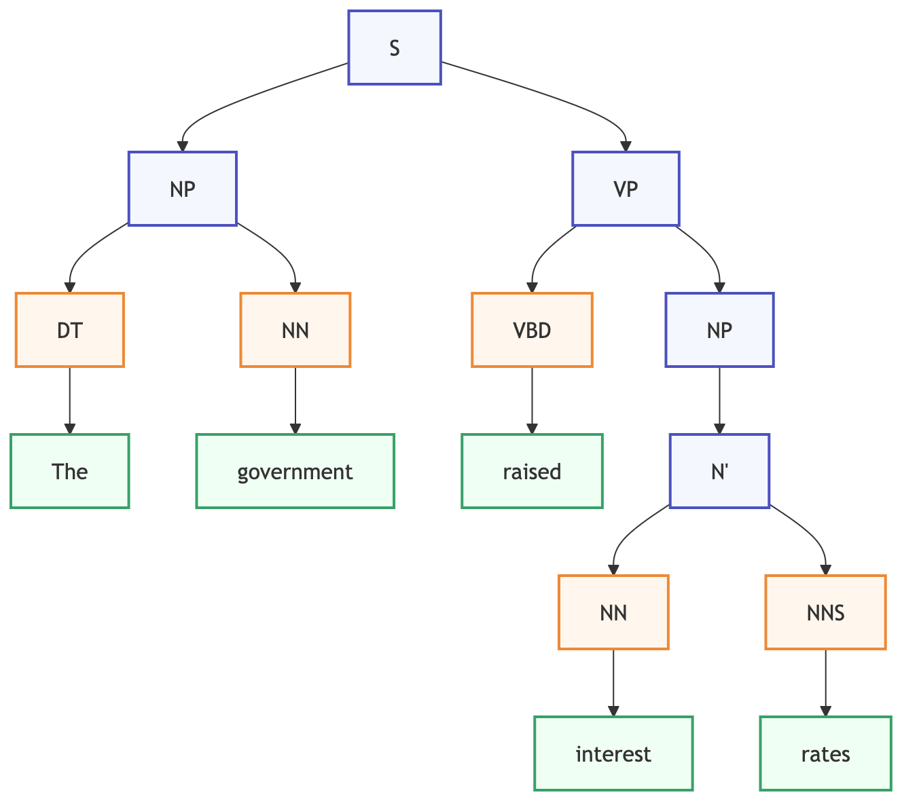
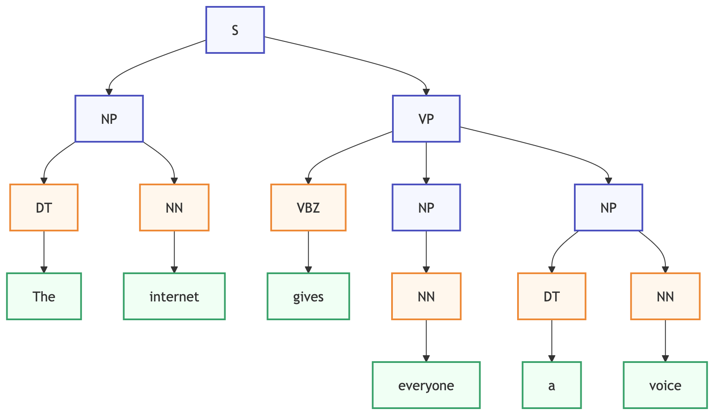
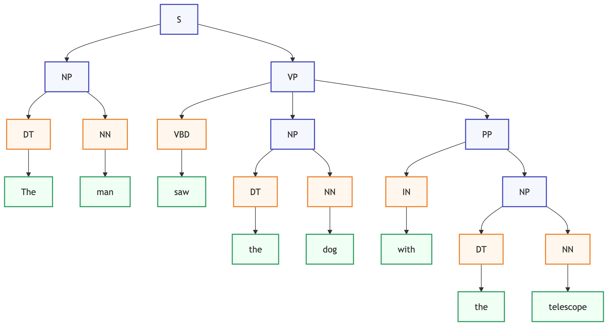
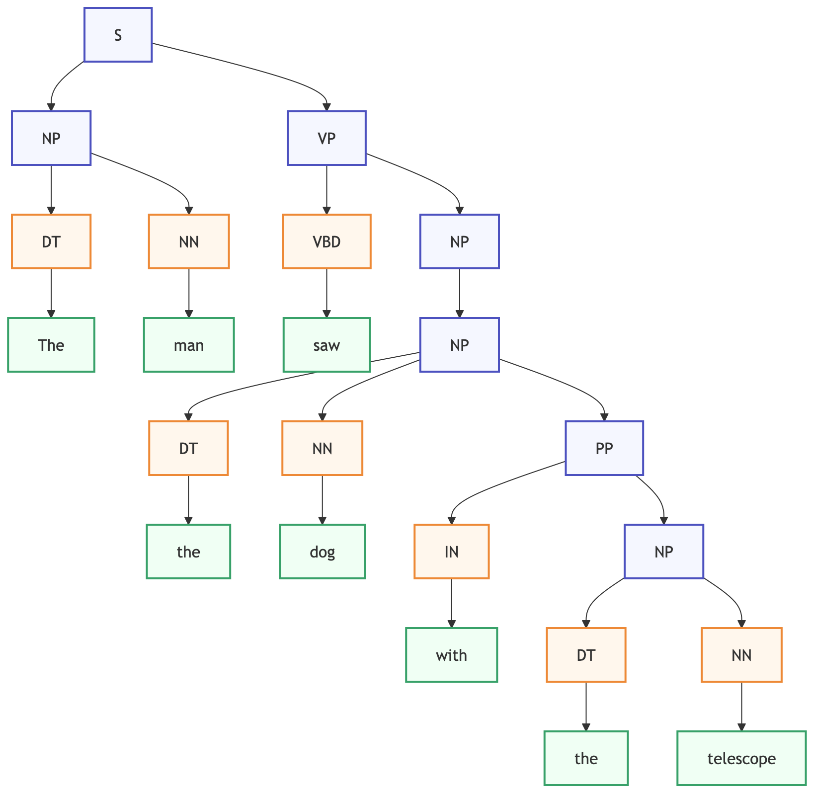
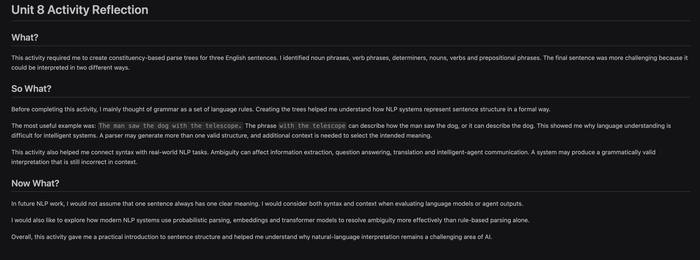
Learning Outcomes
This activity improved my understanding of how Natural Language Processing represents the grammatical structure of language. Creating constituency-based parse trees helped me identify noun phrases, verb phrases and prepositional phrases, and showed how sentence structure can influence meaning.
As someone still developing my knowledge of AI and NLP, I found the third example particularly valuable because it demonstrated that the same sentence can have more than one valid interpretation. This helped me appreciate why understanding natural language is challenging for intelligent systems and why context is often needed alongside grammatical analysis.
Overall, this activity gave me practical experience of applying NLP concepts introduced in the module and strengthened my confidence in analysing sentence structure rather than only reading about it in theory.
Learning outcomes addressed: LO2 and LO4.
9. Units 8–10: Collaborative Discussion 3
This discussion focused on the ethical implications of deep learning technologies. In my initial post, I examined bias, Explainable AI, transparency and human oversight. I argued that technical progress alone does not guarantee fairness, accountability or trust.
Feedback from my classmate introduced additional perspectives, including formal risk management and regulatory frameworks. This broadened my understanding of how organisational governance can complement technical safeguards such as representative datasets, bias testing and explainability.
While responding to other students, I explored practical approaches for reducing ethical risks, including digital watermarking, provenance tracking, stronger identity verification, better dataset documentation and continuous monitoring after deployment.
Overall, the discussion strengthened my understanding that responsible AI requires attention throughout the complete system lifecycle, not only during model development.
Learning outcomes addressed: LO2, LO3 and LO4.
Evidence
Initial Post
Ethical issues in deep learning, including bias, XAI, transparency and governance.
View initial postFeedback Received
Peer feedback on governance frameworks, risk management, explainability and oversight.
View feedback receivedMy Peer Responses
My responses discussing deepfakes, watermarking, transparency and responsible deployment.
View my peer responsesSummary Post
My reflection on fairness, governance, explainability and responsible AI.
View summary postDiscussion Screenshots


10. Unit 10: Deep Learning in Action
This activity focused on understanding how deep learning is applied to solve real-world problems. I explored image recognition using Convolutional Neural Networks (CNNs), one of the most widely used deep-learning techniques. Through this example, I learned how neural networks can automatically identify patterns from large amounts of training data without requiring manually written rules.
Studying this application helped me understand why deep learning has become important in areas such as healthcare, autonomous vehicles, security systems and image classification. Compared with traditional machine learning, deep learning can learn more complex features from data, making it suitable for challenging problems that were previously difficult to automate.
The activity also encouraged me to think beyond technical performance. I explored privacy, bias, fairness, transparency and accountability. I realised that even accurate models can produce unfair or unreliable results when trained on biased or unrepresentative data. Responsible development therefore requires careful data selection, monitoring and human oversight.
Overall, this activity helped me connect theoretical concepts with practical applications and understand that successful AI systems must be accurate, reliable and responsibly designed.
Supporting Evidence
Completed Activity
Analysis of a real-world deep-learning application, including how it works, its benefits, ethical considerations and potential social impact.
View completed activityReflection
Personal reflection on deep learning, responsible AI and the importance of considering ethical issues alongside technical performance.
View reflectionActivity Screenshots
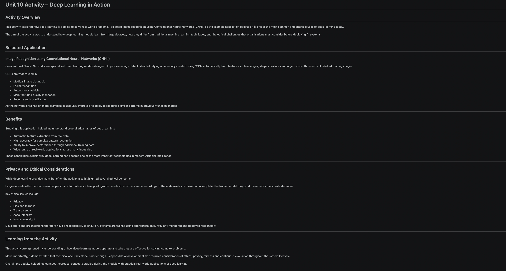
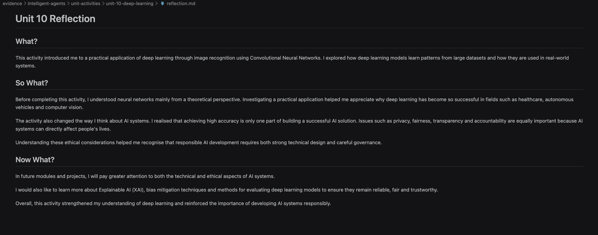
Learning Outcomes
This activity improved my understanding of how deep-learning models are applied to real-world problems and highlighted the importance of ethical, legal and social issues alongside technical performance. It helped me connect neural-network theory with practical AI systems while recognising that privacy, fairness and human oversight are essential for responsible deployment.
Learning outcomes addressed: LO2 and LO3.
11. Units 11–12: Individual Project – Inquiro
Project Overview
Inquiro is the individual system I implemented from the Team C design proposal. It is a multi-agent academic research assistant developed using Python, LangGraph, Ollama and the arXiv API. The system accepts a research question, creates a plan, retrieves academic paper information, processes the evidence and generates a structured Markdown report.
Each execution creates a timestamped run folder containing logs, intermediate agent outputs and the final workflow state. My objective was to build a working and testable prototype rather than a production platform, allowing me to focus on agent responsibilities, shared state, workflow execution, testing and evaluation.
Why It Is a Multi-Agent System
Planner Agent
Creates the research plan and prepares an academic search query.
Retriever Agent
Searches arXiv and returns relevant paper metadata and abstracts.
Processor Agent
Analyses the retrieved evidence and identifies useful findings.
Writer Agent
Produces and saves the final structured Markdown research report.
All four agents use the same local Ollama model, llama3.2:3b, but they remain
separate because each has a different responsibility, prompt, input and output. I understood
this using a simple office analogy: four employees may share one laptop, but each employee
still has a different job.
Alignment with the Team Proposal
| Proposal Element | Final Implementation | Position |
|---|---|---|
| Four specialised agents | Planner, Retriever, Processor and Writer modules | Implemented |
| LangGraph shared state | StateGraph workflow using ResearchState | Implemented |
| Academic retrieval | arXiv metadata and abstracts | Implemented |
| Local reports | Markdown report, logs and per-agent outputs | Implemented |
| Mistral-7B through Ollama | Llama 3.2 3B through Ollama | Adapted for local hardware |
| Optional web interface | Command-line interface | Reduced complexity for the MVP |
Execution Flow and Shared State
The same shared state moves through every stage. Each agent reads the information it needs and returns only new or updated values, which LangGraph merges into the workflow state. Coming from a networking background, I compared the state to a packet travelling through different devices: each node reads part of it, adds information and forwards it.
Testing and Remediation
I used unit tests and functional workflow testing rather than relying on one successful manual demonstration. I also inspected logs, intermediate JSON outputs and final reports because a workflow can execute successfully while still retrieving weak or irrelevant evidence.
Testing revealed that Ollama was initially unavailable, some broad questions returned no papers and other searches produced weakly related results. I verified the local connection, refined the Planner prompt, added fallback queries and saved intermediate outputs and logs. One of my main lessons was that running code is not the same as producing a useful research result.
Strengths, Limitations and Future Work
The final prototype has clear agent boundaries, explicit shared state, local model execution, real arXiv retrieval, observable intermediate outputs and automated tests. However, it remains an MVP. The small model has limited reasoning ability, retrieval depends mainly on arXiv, relevance checks are basic and there is no human approval stage before the final report.
My first future priority would be improving retrieval quality through stronger relevance scoring, deduplication and evaluation against predefined questions. A deterministic template, additional academic sources and a Streamlit interface could be added after retrieval becomes more reliable.
Supporting Evidence
Project Summary
Purpose, architecture, workflow, technologies and alignment with the Team C proposal.
View project summaryImplementation Reflection
Reflection on shared state, model selection, modularity, debugging and future development.
View implementation reflectionTesting and Remediation
Testing approach, problems identified, corrective actions and lessons learned.
View testing and remediationComplete GitHub Repository
Full source code, dependencies, tests and technical documentation.
Open the Inquiro repositoryImplementation Screenshots
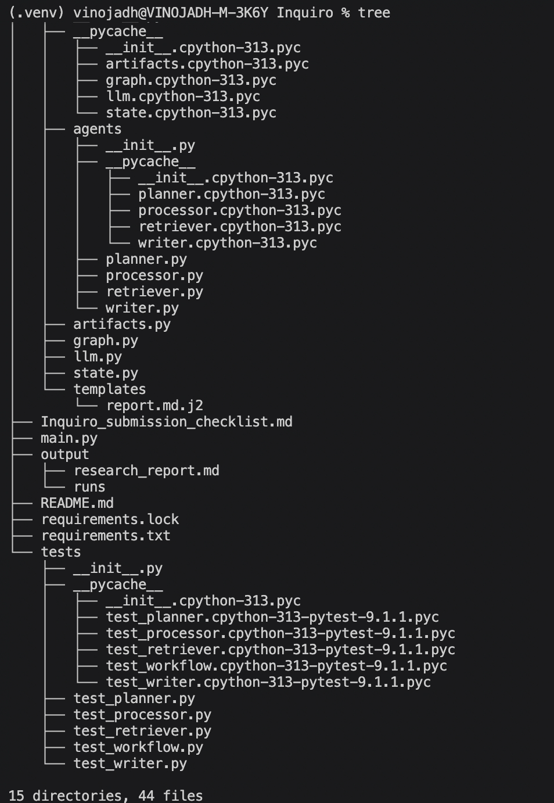
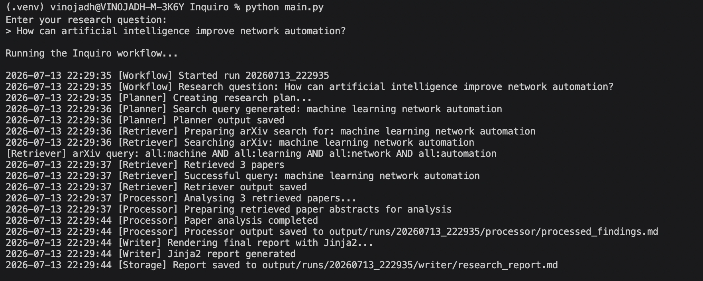
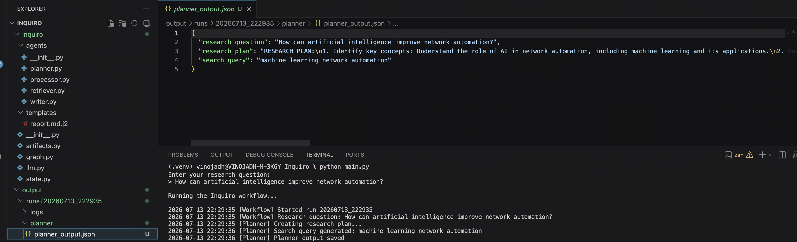
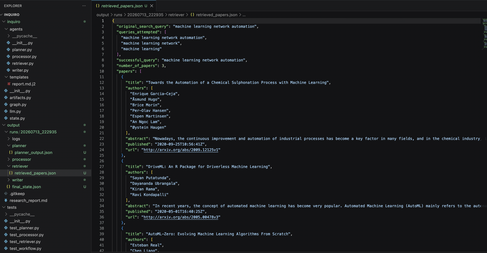
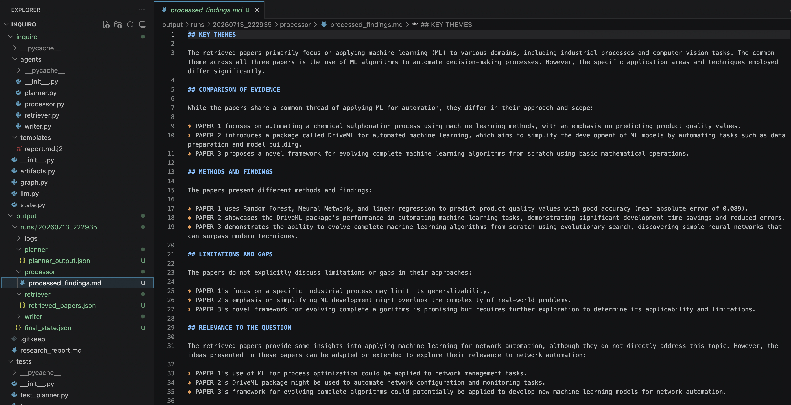
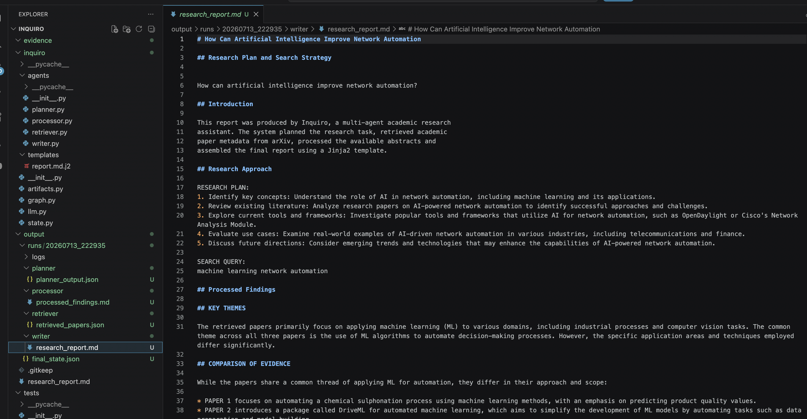
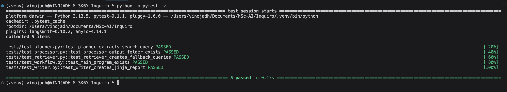
Critical Reflection
What?
I implemented a working multi-agent research workflow based on the Team C proposal. The final system connected planning, retrieval, processing and report generation using LangGraph and a local Ollama model.
So What?
The project moved my understanding from theory into practical software development. It taught me that agent identity comes from role, responsibility and workflow boundaries, not simply from using a different model for each component. It also showed that testing intelligent systems must examine output quality and relevance, not only whether the program runs.
Now What?
I would improve retrieval relevance and evaluation before adding interface features. I would also include a human review stage so that retrieved evidence and generated reports can be checked before being accepted.
Learning Outcomes
This project helped me understand how a multi-agent architecture can be applied to a practical research problem. I used Python, LangGraph, Ollama, the arXiv API and pytest to build, test and evaluate the system. It connected concepts from the module with a working implementation and increased my awareness of reliability, explainability and responsible AI development.
Learning outcomes addressed: LO1, LO2 and LO3.
12. Three Reflective Case Studies
Case Study 1: AI Safety Constraints
The early discussions on autonomy helped me understand that intelligent agents should not operate without clear limits. In Inquiro, I reduced risk by giving each agent one defined responsibility, using a fixed workflow and saving intermediate results for inspection. The system is not allowed to take external actions or make high-impact decisions.
I learned that safety is not only a final test. It should influence the architecture through bounded roles, validation, failure handling and human intervention. A future version should include a review stage before the final report is accepted.
Case Study 2: Explainable Decisions in Agents
During development I found that one final report was not enough to understand how the result had been produced. I therefore added per-agent outputs, timestamps, workflow logs and the final shared state. This made the Planner, Retriever, Processor and Writer stages easier to inspect.
The experience showed me that explainability can be practical rather than theoretical. Clear stages and stored evidence improve debugging, trust and evaluation, although they do not fully explain the internal reasoning of the language model.
Case Study 3: Responsible Deployment
Inquiro can generate a useful starting report, but it should not be treated as a reliable commercial research platform. Retrieval can miss relevant papers, the small local model may misunderstand evidence and generated text may contain unsupported claims.
Responsible deployment therefore requires source checks, transparent limitations and human review. I would improve relevance scoring and evaluation before adding more features. This reinforced that technical success must be considered alongside source quality, accountability and professional responsibility.
13. Team Meetings, Feedback and Professional Development
Team Meeting Notes
| Date | Participants | Discussion or Decision | My Action or Contribution |
|---|---|---|---|
| 28 May 2026 | Team C | Agreed the four-agent architecture, technology direction, shared-state research question, responsibilities and next actions. | Participated in the design discussion, questioned implementation complexity and shared-state choices, and documented the meeting outcomes. |
Feedback and Action Taken
| Source | Feedback | Action Taken |
|---|---|---|
| Team discussion | Keep complexity low so the system can be implemented and tested quickly. | Used one shared local Ollama model with four separate roles and retained a stable command-line interface. |
| Tutor feedback | Clarify component boundaries, local/cloud choices, academic context and risks. | Defined four core agents, documented supporting components, used local Ollama only, and added testing and remediation evidence. |
| Testing evidence | Successful execution did not always produce relevant papers. | Refined Planner query rules, added fallback searches and saved intermediate outputs for inspection. |
Professional Skills Matrix and PDP
| Skill | Evidence | Current Position | Future Action |
|---|---|---|---|
| Critical thinking | Compared architectures, model choices, risks and limitations. | Developing | Use clearer evaluation criteria when comparing AI designs. |
| Teamwork | Team C meetings, proposal review and collaborative decisions. | Developing | Agree responsibilities and decision records earlier. |
| Problem-solving | Resolved Ollama, retrieval, processor and evidence-saving issues. | Developing | Practise systematic debugging and automated integration testing. |
| IT and digital skills | Python, LangGraph, Ollama, APIs, GitHub, pytest and HTML. | Developing | Learn deployment, CI/CD and stronger evaluation tooling. |
| Ethical awareness | Deep-learning discussion, case studies and Inquiro limitations. | Developing | Apply human review and responsible-AI checks in future systems. |
| Critical reflection | Activity reflections, remediation log and final reflective piece. | Developing | Record reflection and lessons throughout projects, not only at the end. |
14. Final Reflective Piece
Reflective framework: Rolfe, Freshwater and Jasper (2001).
What?
During this module I progressed from studying the principles of intelligent agents to designing and implementing a working multi-agent research assistant. The collaborative discussions helped me explore autonomy, communication, ethics and deep learning. Practical activities introduced KQML, KIF, constituency parsing and responsible AI issues. The Team C proposal then provided a design for an academic research assistant with Planner, Retriever, Processor and Writer agents.
My individual implementation, Inquiro, used Python, LangGraph, Ollama and the arXiv API. I kept the system deliberately simple so that I could complete a working and testable MVP. The main changes from the proposal were using one smaller local language model and a command-line interface. I added logs, intermediate outputs, unit tests and remediation documentation after testing exposed retrieval and observability problems.
So What?
The module changed my understanding of what makes a system agent-based. At first I associated agents mainly with automation or separate AI models. The implementation showed me that an agent is better understood through its goal, role, inputs, outputs and position in a workflow. Four agents can share one model while still performing different responsibilities.
Building the system also taught me that successful execution is only one part of evaluation. Inquiro sometimes completed its workflow while returning no papers or weakly relevant papers. This was initially frustrating because the code appeared correct. However, it helped me recognise that intelligent systems must be evaluated for usefulness, relevance and failure behaviour as well as technical correctness.
Teamwork was another important learning area. Different members contributed architecture, documentation and review skills. Constructive disagreement improved the proposal, but I also learned that clear responsibilities and documented decisions should be established early. Personally, I contributed questions, technical review and meeting documentation, while recognising that I need to become more confident in making technical decisions within limited project time.
The ethical discussions influenced how I evaluated Inquiro. The generated report should not be trusted automatically because source retrieval, model reasoning and summarisation can all fail. Logs and intermediate outputs improve traceability, but a human still needs to review the evidence. This strengthened my understanding that explainability, boundaries and oversight are practical engineering concerns.
Now What?
My next priority would be improving retrieval quality before adding more features. I would introduce relevance scoring, deduplication, additional academic sources and a fixed evaluation set. I would also add a human approval stage before the Writer produces the final report. A Streamlit interface could be useful later, but only after the research workflow is more reliable.
Professionally, I want to continue developing Python, software testing, LangGraph and responsible-AI skills. I am particularly interested in applying agent workflows to network automation and troubleshooting, where agents could collect evidence and prepare recommendations while engineers retain control of operational decisions.
Overall, this module increased my confidence in moving from an AI design to a working software implementation. It also made me more aware that reliable intelligent systems require careful architecture, relevant data, observable behaviour, testing, reflection and human responsibility.
15. Learning Outcome Mapping
| Evidence | LO1 | LO2 | LO3 | LO4 |
|---|---|---|---|---|
| Discussion 1 | ✓ | ✓ | ||
| Discussion 2 | ✓ | ✓ | ✓ | |
| Unit 6 Dialogue | ✓ | ✓ | ||
| Team C Proposal | ✓ | ✓ | ✓ | ✓ |
| Unit 8 Parse Tree | ✓ | ✓ | ||
| Discussion 3 | ✓ | ✓ | ✓ | |
| Unit 10 Activity | ✓ | ✓ | ||
| Inquiro Project | ✓ | ✓ | ✓ | |
| Final Reflection | ✓ | ✓ | ✓ | ✓ |
16. References
Ammanath, B. and Firth-Butterfield, K. (2022) Trustworthy AI: A business guide for navigating trust and ethics in AI. Hoboken, NJ: Wiley.
Lewis, P. et al. (2020) ‘Retrieval-augmented generation for knowledge-intensive NLP tasks’, Advances in Neural Information Processing Systems, 33, pp. 9459–9474.
Rolfe, G., Freshwater, D. and Jasper, M. (2001) Critical reflection in nursing and the helping professions: A user’s guide. Basingstoke: Palgrave Macmillan.
Russell, S.J. and Norvig, P. (2021) Artificial intelligence: A modern approach. 4th edn. Harlow: Pearson.
Wooldridge, M. (2009) An introduction to multiagent systems. 2nd edn. Chichester: Wiley.
Yao, S. et al. (2023) ‘ReAct: Synergizing reasoning and acting in language models’, International Conference on Learning Representations.
LangChain (n.d.) LangGraph documentation. Available at: https://langchain-ai.github.io/langgraph/ (Accessed: 20 July 2026).
Ollama (n.d.) Ollama documentation. Available at: https://ollama.com/ (Accessed: 20 July 2026).
arXiv (n.d.) arXiv API user’s manual. Available at: https://info.arxiv.org/help/api/ (Accessed: 20 July 2026).